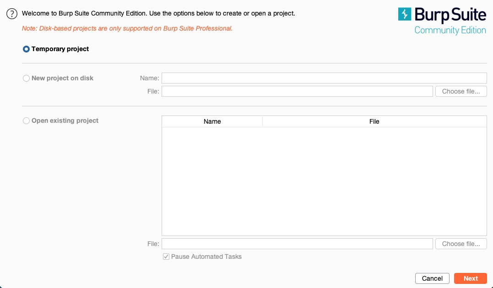
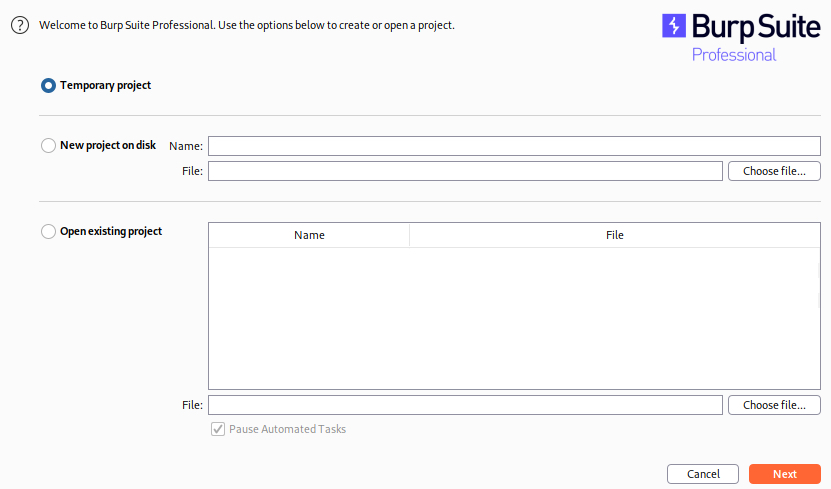
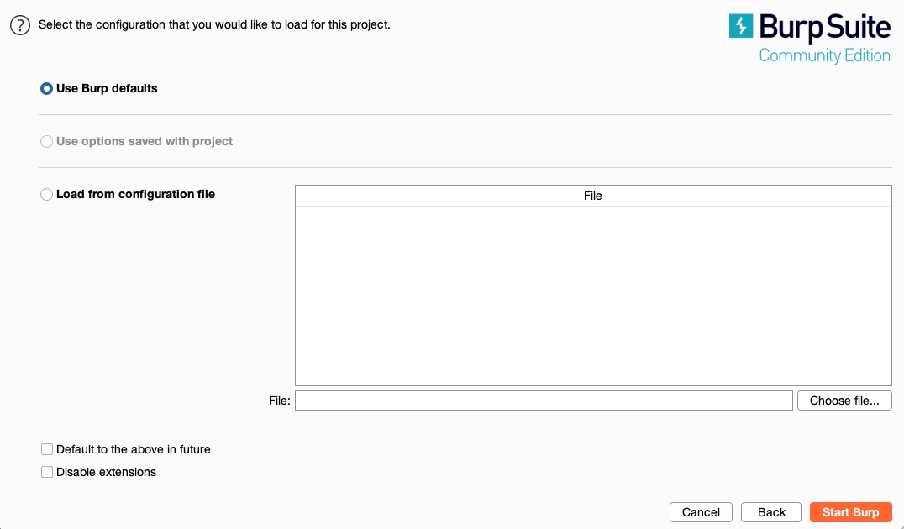

Burp va ZAP o'rnatish va sozlash
Burp va ZAP ikkala Windows, macOS va istalgan Linux distributsiya uchun mavjud. Ikkala vosita ham Parrot yoki Kali kabi umumiy Penetration Testing Linux distributsiyalarida odatda oldindan o'rnatilgan bo'ladi. Ushbu bo'limda biz Burp va ZAP uchun installation va setup jarayonlarini ko'rib chiqamiz — ayniqsa vositalarni o'z VM'imizga qo'lda o'rnatmoqchi bo'lsak foydali.
// Burp Suite
Agar Burp VM'imizda pre-installed bo'lmasa, avval Burp's Download Page dan yuklab olish bilan boshlaymiz. Yuklab olingach, installer ni ishga tushirib, operatsion tizimga qarab farq qilishi mumkin bo'lgan, ammo oddiy ko'rsatmalarga amal qilib o'rnatamiz. Windows, Linux va macOS uchun installers mavjud.
O'rnatilgach, Burp ni terminaldan burpsuite deb yozib ishga tushirish yoki avvalgi kabi application menu dan ochish mumkin. Yana bir variant — yuqoridagi download sahifasidan barcha operatsion tizimlarda ishlaydigan JAR faylini (Java Runtime Environment (JRE) o'rnatilgan bo'lsa) yuklab olishdir. Uni quyidagi command line bilan yoki double-clicking orqali ishga tushirishimiz mumkin:
centipede@centisec[/centi]$ java -jar </path/to/burpsuite.jar>Burp ishga tushirilgach, bizdan yangi project yaratish so'raladi. Agar community version ni ishlatayotgan bo'lsak, faqat temporary projects dan foydalanishimiz mumkin bo'ladi, ya'ni progress'ni saqlab, keyinchalik davom ettirish imkoniyati bo'lmaydi:

Agar biz pro/enterprise version dan foydalansak, yangi project yaratish yoki mavjud project ni ochish imkoniyatiga ega bo'lamiz.

Katta web ilovalarni pentesting qilayotganimizda yoki Active Web Scan ishga tushirayotganimizda progress'ni saqlashimiz kerak bo'lishi mumkin. Biroq ko'plab hollarda progress'ni saqlashga hojat yo'q va har safar temporary project bilan boshlash yetarli bo'ladi.
Shunday ekan, temporary project ni tanlaymiz va continue tugmasini bosamiz. Shundan so'ng bizga Burp Default Configurations ni ishlatish yoki Load a Configuration File ni yuklash taklif etiladi — biz birinchi variantni tanlaymiz.
// OWASP ZAP
ZAP'ni rasmiy yuklash sahifasidan yuklab olamiz, operatsion tizimimizga mos o'rnatuvchini tanlaymiz va oddiy o'rnatish ko'rsatmalariga amal qilib o'rnatamiz. ZAP'ning cross-platform JAR varianti ham mavjud; JRE o'rnatilgan bo'lsa, uni quyidagi buyruq orqali ishga tushirish mumkin — Burp'dagi kabi:
$ java -jar <path/to/zap.jar>ZAP bilan ishni boshlash uchun terminalda zaproxy deb yozib ishga tushiramiz yoki application menudan topib ochamiz. ZAP ishga tushgach, Burp'ning bepul versiyasidan farqli ravishda, bizdan yangi project yoki temporary project yaratish so'raladi. Katta va bir necha kun davomida saqlash talab etilmaydigan ishlar uchun temporary project'dan foydalanish ma'qul — ya'ni "No" ni tanlaymiz.

Shundan so'ng ZAP ishga tushadi va biz proxy sozlamalarini davom ettirishimiz mumkin — bu keyingi bo'limda muhokama qilinadi.
// Dark Theme
Agar dark theme ishlatishni afzal ko'rsangiz, Burp'da Burp > Settings > User interface > Display ga o'tib theme ostidan "dark" ni tanlang; ZAP'da esa Tools > Options > Display ga o'tib Look and Feel ichidan "Flat Dark" ni tanlang.
Keyingi dars →